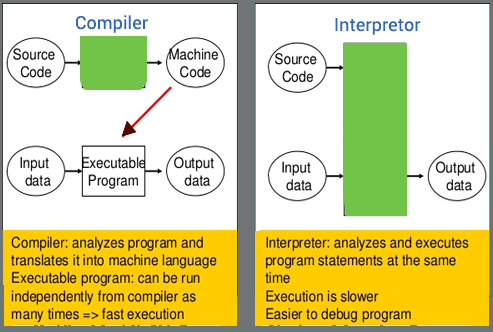
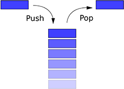
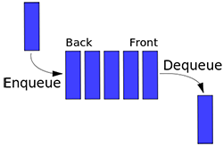

var development=0;
var origin,destination,travelMode;
var appdata="_user_appdata";
//peaks data load
var Geoposition = function(latitude, longitude) {
this.latitude = latitude;
this.longitude = longitude;
}
Python is
- general-purpose
- interactive
- object-oriented
- high-level
- Open Source (GNU GPL)
- interpretor
- programming language
- created by Guido van Rossum
- www.python.org

Python code is not compiled. It is run by the interpreter line by line.
Users can interact with the Python interpreter to write and run programs.
Python supports Object-Oriented programming and encapsulating (code inside object). Python used to develop data processing systems, information security, web applications to games.
Python IDLE has an interactive shell that you can enter commands directly.
Python has flexible arrays and dictionaries. Python is applicable to a much
larger problem domain. Python split program into modules to re use in other Python programs. It has a large collection of standard modules for file I/O, system calls, sockets, and GUI support with Tcl/Tk. Python code is shorter than C, C++, or Java: No variable/argument declaration needed.
Installing Python
Python is available for Windows, Linux, Unix and Mac platforms
Download Python www.python.org
Python 3.x and 2.x are different.
Variables
- Program are working with different types of data.
- They handle data using variables.
- A variable stores a piece of data.
- A variable has a specific name.
- You can store numbers, text, lists in variables
- Variables store values for later use
- You can pass variables to different functions.
#examples
name="Ruvini"
age=18
height=5.6
Reassigning Variables
name="Sindi" # name is set to "Sindi"
age=19 # age is set to 19
height=5.7 # height is now set 5.7
Booleans
A boolean variable is like a light switch.
It can only have two values True or False.
Python stores true as 1 and false as 0
but outputs 'true' or 'false' from print statements
If you input Boolean values, you must input 1 or 0.
a = True
b = False
Boolean expressions return a True or False value
c=(c < d)
Variables naming rules
- The first character of must be a letter or ('_')
- Uppercase, lowercase allowed
- The rest of the name can consist of letters, ('_') and numbers
- Variable names are case-sensitive. myname and MYNAME are not the same.
- Examples :
Valid names : i, _my_name, name__23 , a1b2_c3 and r_r_c23
- Invalid names : 2things, *name, age+
- Good variable names are important!
- Describe the value: numberOfCats, numbcats, ncats, num_cats
# Hard to understand
ir = 0.12
b = 12123.34
i = ir * b
# Easy to understand
interest_rate = 0.12
account_balance = 12123.34
interest_amount = interest_rate * account_balance
Variables can hold values of different types called data types.
Python Data Types
The data stored in memory can be of many types.
Age is stored as a numeric value.
Name as a string of characters
Address as alphanumeric characters.
Python has 5 standard data types
Numbers
String
List
Tuple
Dictionary
Number Data Types
- Number data types store numeric values.
- Number objects are created when you assign a value to them.
var1 = 1
var2 = 10
- int : (signed integers) : 7, -1, -240
- long (long integers, in octal and hexadecimal) : 51924361L
- float (floating point real values) : 3.147
- complex (complex numbers) : 3.14j
A complex number used is pair of real floating-point numbers denoted by x + yj
where x and y are the real numbers and j is the imaginary unit.
Python Strings
Strings in Python are character sequences
Ex: "Kandy", 'Jaffna';
Python allows using either single or double quotes.
The plus (+) sign is the string concatenation operator
The asterisk (*) is the repetition operator.
#!/usr/bin/python
str = 'Hello Python!'
print str # Prints complete string
print str + "T" # Prints concatenated string
print str * 2 # Prints string two times
print str[0] # Prints first character
print str[2:5] # Prints from 3rd to 5th
print str[2:] # Prints from 3rd character
#The output will be
Hello python!
Hello python!T
Hello python!Hello python!
H
llo
llo python!
Data Type Conversion
You can convert data between types.
For this we use the type name as a function.
Type conversion functions return a new object representing the converted value.
int(x ) - Converts x to an integer.
long(x) Converts x to a long integer.
float(x) - Converts x to a floating-point number.
str(x) - Converts object x to a string.
chr(x) - Converts an integer to a character.
ord(x)- Converts a single character to its integer value.
hex(x) -Converts an integer to a hexadecimal string.
oct(x) - Converts an integer to an octal string.
unichr(x) - Converts an integer to a Unicode character.
eval(str) - Evaluates a string and returns an object.
tuple(s) - Converts s to a tuple.
list(s) - Converts s to a list.
dict(d) - Creates a dictionary from (key,value) tuples.
set(s) -Converts s to a set.
Python Arrays
- Python doesn't have a native array data structure.
- The list datatype in python can be used as an array
- A list is an ordered collection of items of any type
- If there are n items in a list
- The first index is 0
- The last index is n-1
#array example
myList=[1,2,3,4,5,6]
print(myList[0], myList[5])
myList[0]=100
print(myList[0])
myList[1]="Yasas"
print(myList[1])
Python Lists
- Python list contains items separated by commas.
- Items in a list can be of different data type.
- The plus (+) sign is the concatenation operator
- And the asterisk (*) is the repetition operator.
#!/usr/bin/python
list1 = [1,23, 'Ruwini',7]
print list1 # Prints complete list
print list1[0] # Prints first element
print list1[1:3] # Prints from 2nd till 3rd
print list[2:] # Prints from 3rd element
#what would be the output?
Python Tuples
A tuple is similar to the list.
The differences between lists and tuples:
Lists are enclosed in brackets ( [ ] )
List elements and size can be changed
Tuples are enclosed in parentheses ( )
Tuples cannot be updated.
Tuples are like as read-only lists
tuple1 = (123, 'Niki', "Sugi",9)
print tuple1 # Prints complete list
print tuple1[0] # Prints first element
print tuple1[1:3] # Prints from 2nd till 3rd
print tuple1[2:] # Printsfrom 3rd element
#What will be the output ?
Python Dictionaries
- Python's dictionaries are associative arrays
- The elements in the array consist of key-value pairs.
- key
- Value can be any Python object.
- Dictionaries are enclosed by curly braces { }
- values can be accessed using square braces []
dict1 = {}
dict1['one'] = "One"
dict1[2] = "Two"
print dict1['one'] # Prints value for 'one' key
print dict1[2] # Prints value for 2 key
print dict1 # Prints complete dictionary
print dict1.keys() # Prints all the keys
print dict1.values() # Prints all the values
#The output will be
One
Two
{2: 'Two', 'one': 'One'}
[2, 'one']
['Two', 'One']
Python Operators
Operators are used to manipulate the value of operands.
- Arithmetic Operators
- Comparison Operators
- Assignment Operators
- Logical Operators
#Arithmetic Operators
a=2+3 # Add
b=9-2 # Subtraction
c= 108 * 0.5 # multiplication
c= 6/2 # Division
eight = 2 ** 3 # Exponentiation
x=10
y=2
#How do you get 100 using x,y
z=x**y # Exponentiation
Modulo operator and Floor Davison
.
# Modulo returns the remainder from a division
print (1% 3) # yields 1
print (2% 3) # yields 2
print (3% 3) # yields 0
print (4% 3) # yields 1
# Floor Division
print (9//2) # yields 4
print (-11//3) #yields -4
Comparison Operators
These operators used to compare two values
> bigger than
< smaller than
== equal value
<= smaller OR equal
>= bigger OR equal
!= not equal
# run following code
print (7 > 10) # false
print (4 < 16) # true
print (4 == 4) # true
print (4 <= 4) # true
print (4 >= 4) # true
print (4 != 4) # false
# isPositive true or false?
number = 10
isPositive = (number > 0)
Assignment Operators
Assignments : We are associating a name to a value.
The name is called a variable or identifier.
c = a + b # assigns value of a + b into c
c += a # equivalent to c = c + a
c -= a # equivalent to c = c - a
c *= a # equivalent to c = c * a
#example - check output
c=1
c+=3
print(c) #output 4
c*=3
print(c)
Assignment Operators 2
#What will be output ?
x = 4
y = x + 1
x = 2
print (x, y)
#What will be output ?
a, b = 2, 3
print (a, b)
b, c = a, b + 1
print (a, b,c)
Logical operators
There are three logical operators, and, or, and not
They help us to build more complex Boolean expressions from simpler Boolean expressions.
#produces True only if x is greater than 0 and at the same time, x is less than 10.
x > 0 and x < 10
#produces True if any of the conditions is True
# true if the number n is divisible by 2 or it is divisible by 3.
n % 2 == 0 or n % 3 ==0
#What if n is divisible by both 2 and by 3 ?
#not operator negates a Boolean value
#true if x is less than or equal to y
not (x > y) is True if (x > y) # is False
Short-circuit evaluation
For or operator, the expression on the left is evaluated first: if the result is True, Python does not evaluate the expression on the right
For the and operator, if the expression on the left yields False, Python does not evaluate the expression on the right.
Membership an Identity Operators
Membership operators test for membership in a sequence, such as strings, lists, or tuples.
Identity operators compare the memory locations of two objects
x=2
y={1,2,3,4,5}
Z=x in y # Z is true if x is a member of y.
R= x not in y # Z is false if x is not a member of y.
#Identity operators
Z=x is y # Z is true if id(x) equals id(y).
R= x is not y # , Z is true if id(x) not equals id(y).
Operator precedence
Determines the order of operators evaluation.
Operators with higher precedence are evaluated first.
3 + 4 * 5 # returns 23
x = 17 / 2 * 3 + 2
print (x)
# / and * share equal precedence
# They are higher than the + and - operators.
# division and multiplication done before the addition,
# Evaluate x, y, z and p
x = 2 + 17 / 2 * 3
y = 19 % 4 + 15 / 2 * 3
z = (15 + 6) - 10 * 4
p = 17 / 2 % 2 * 3**3
Conditions
Condition statements are used to make decisions.
- They perform different actions on true or false returned from a conditional statement.
- Conditionals use comparisons and arithmetic expressions.
- if, else and elif branch program actions.
if it is raining , I need an umbrella
if it is a holiday, I can sleep more , else I have to get up early.
if I have money , I can buy a camera, else if i have a photographer friend, I can borrow a camera, else I will not do photography.
IF Condition
- The if, else and elif used to branch program actions.
#if statement
#change a and b values
a=1
b=2
c=a+b
if (c==3) :
print ('total is 3')
else:
print ('total is not 3')
# indent (spacing out) your code.
# every code block indented with tab or 4 spaces
>
Multiple Conditionals
One if statement result can lead to another if statement
if it is raining , If I have umbrella, I can go out
# multiple if statements
marks = input("Enter marks: ")
marks = int(marks)
if marks >= 75:
grade = 'A'
else:
if marks >= 60:
grade = 'B'
else:
grade = 'C'
print ("Grade is: " + grade)
Nested Conditions
The result of if statement lead to nested if statements
The decision making involve multiple condition checks
if your are a citizen in Sri Lanka, and if you are 18 years old,and if you wish, you can vote
# Nested if example
marks = input("Enter marks: ")
marks = int(marks)
if marks >= 80:
grade = 'A'
else:
if marks >= 70:
grade = 'B'
else:
if marks >= 55:
grade = 'C'
else:
if marks >= 50:
grade = 'Pass'
else:
grade = 'Fail'
print ("\n\nGrade is: " + grade)
else if
Python keyword elif used for if else statements
It makes programs shorter
# using elif
marks = input("Enter marks: ")
marks = int(marks)
if marks >= 75 :
grade = 'A'
elif marks >= 60:
grade = 'B'
elif marks >= 50 :
grade = 'C'
elif marks >= 40 :
grade = 'S'
else:
grade = 'W'
print ("\n\nGrade is: " + grade)
Conditionals with and / or
Python keyword elif used for if else statements
It makes programs shorter
age = input("Enter age: ")
age = int(age)
have_own_car = input("Do you have a car (y/n): ")
if (age >= 18) and (have_own_car == 'y'):
print ("You are over 18 years has a car")
if (age >= 18) and (have_own_car == 'n'):
print ("You are over 18 have no car")
if (age < 18) and (have_own_car == 'y'):
print ("You are too young to have a car")
if (age < 18) and (have_own_car == 'n'):
print ("You can buy a car when you are 18")
# How can you re-write above code using if, elif, and , or ?
Compact if else
Group Main and sub conditions
to make programs shorter
#car sales program
age = input("Enter age: ")
age = int(age)
have_own_car = input("Do you have a car (y/n): ")
if (age >= 18):
if (have_own_car == 'y'):
print ("Would you like to buy a new car?")
else:
print ("Would you like to buy a car?")
else:
print ("Please ask your parents to buy a car")
Loops
Loops help carry out a sequence of statements repeatedly.
Python has while loop and the for loop.
# while loop repeats until a condition is true
x = 1
while x < 5: # condition for loop
#following code executed 4 times
print (x)
x = x + 1
print ('I love python')
print ('done')
# Loop to calculate average of 3 numbers
total = 0.0
count = 0
while count < 3:
number=float(input("Enter a number: "))
count = count + 1
total = total + number
average = total / 3
print ("The average is " + str(average))
For Loops
For Loops repeat specific number of times
Python has while loop and the for loop.
# counter-controlled for loop
# range (10) is 0 through 9
for i in range (10):
print (i)
#range (5,10) is 5 through 9
for c in range (5,10):
print (c)
# calculate the sum of numbers in a range
sum=0
for i in range (10):
sum=sum+ i
print(sum)
Break
Loops can be broken with break statement.
#break with the for loop
for c in range (1,6):
if c == 3:
break
print (c)
#non stop runner
while 1:
print ('Running? ')
print ('Press the Ctrl + C')
print ('to stop running')
print ('I am out of loop')
print ('done')
# breaking out of loop
while 1:
print ('running')
answer = input('Press y to end')
if answer == 'y':
print ('you stopped me?')
break # get out of loop
print ('Out of loop')
print ('done!')
Continue
Loops can be continued with continue statement.
# continue with for
for letter in 'Python':
if letter == 'h':
continue
print 'Current Letter :', letter
# continue with while
var = 10 # Second Example
while var > 0:
var = var -1
if var == 5:
continue
print 'Current variable value :', var
print "Good bye!"
Pass
The pass statement does nothing when it executes.
for letter in 'Python':
if letter == 'h':
pass
print 'This is pass block'
print 'Current Letter :', letter
print "Good bye!"
Loop in a loop
Loops can be in another loop.
# loop in a loop, what is the out put
for num in range(10): #to iterate between 10 to 20
for j in range(10):
print (i * j)
# Loop inside a loop with while
''
First loop x < 6 repeats 5 times,
within y < 6 a loop repeats 5 times
total 25 processes run
'''
x = 1
while (x < 6):
print () # prints a new line
print ("x = " + str(x),) # the , prints next item on the same line
x = x + 1
y = 1
while (y < 6):
print ("y = " + str(y),)
y=y+1
z= x * y
print (x)
print(y)
print(z)
range() function
The range() function has 3 parameters
range([start], stop[, step])
The first and last parameters are optional
start: Starting number
stop: Generate numbers up to, not including this number.
step: Difference between each number
All parameters must be integers.
parameters can be positive or negative.pan>
range(0, 5) generates integers from 0 up to 5, not including, 5.
#What will be the output of following
for i in range(5):
print(i)
for i in range(3,6):
print(i)
for i in range(2,10,2):
print(i)
Loops with Conditions
Loops can be combined with conditions.
# loop in a loop example with break
# print prime numbers
for num in range(10,20): #to iterate between 10 to 20
for i in range(2,num): #to iterate on the factors of the number
if num%i == 0: #to determine the first factor
j=num/i #to calculate the second factor
print '%d equals %d * %d' % (num,i,j)
break #to move to the next number, the #first FOR
else: # else part of the loop
print num, 'is a prime number'
# what is the output of this program
Functions
A function is a block of code used to perform a single action.
- Functions takes inputs called parameters
- Funtions process inputs and return a result
- There are pyton built-in functions like print()
- You can create your own user-defined functions.
- 1st line used to describe the function. This line is not executed
- Functions provide better modularity.
# Function definition
def greeting():
print ("Hello Friend!")
print ("Welcome to Python!")
greeting()
greeting()
greeting()
# Function with parameters
def printme( str ):
"I print a string passed to me"
print (str)
return; # can return none
# call printme function
printme("1st call to printme function")
printme("2nd call to same function")
Return value
Functions return a value after code execution.
# adding function
def addTwo( a,b ):
c=a+b
return c; # return value
# calling addTwo function
d=addTwo (1,3)
print (d)
e=addTwo (d,3)
print (d)
f= addTwo (d,e)
print(f)
Passed by reference
All variables passed to functions as parameters are passed by reference.
any change reflects back in the passed variable.
def appendMe( mylist ):
mylist.append([1,2,3,4]);
print "Values inside the function: ", mylist
return
# Now you can call changeme function
mylist = [10,20,30];
appendMe( mylist );
print "Values outside the function: ", mylist
Changing Parameter values
The change to parameter value reflects back in the passed variable.
#Example
def changeMe( mylist ):
mylist = [1,2,3,4]; # assign new reference in mylist
print ("Values inside the function: ", mylist)
return
# Now you can call changeme function
mylist = [10,20,30];
print (Values before passing", mylist)
changeMe( mylist );
print (Values after passing", mylist)
Functions inside Functions
Functions can call other functions inside their code
#using multiple functions
def cube( y ):
c= y * y * y
return c
def doublecube ( z ):
z=z * 2
dc=cube( z) # calls cube here
return dc
print ("Cubes")
for x in range(1,6):
print (cube(x))
print ("1 to 5 doubled")
for x in range(1,6):
print (doublecube(x))
Boolean Functions
Functions can return a boolean value
#checks if a number is positive
def isPositive(x):
if (x >= 0):
return 1 # 1 is true
else:
return 0 # 0 is false
result = isPositive(1)
print (result)
result = isPositive(-1)
print (result)
#division by zero check
def xdivision(x,y):
if (y == 0):
print ("division by zero not allowed")
return
else:
return x / y
result = xdivision( 5.0 , 2 )
print (result)
result = xdivision( 5.0 , 0 )
print (result)
Math Functions
You need to import math module to call math functions.
import math # import math module
# Negative number.
n = -100.5
# Absolute value.
print(abs(n))
# Fractional number.
n = 100.7
# Absolute value.
print(math.floor(n)) # output 100.0
print(math.ceil(n)) # output 101.0
#Rounding to number of decimal places
number = 1.23456
print(round(number))
print(round(number, 0))
print(round(number, 1))
print(round(number, 2))
print(round(number, 3))
#Output
1 0 digits
1.0 0 digits
1.2 1 digit
1.23 2 digits
1.235 3 digits
Math Functions 2
# Input list.
values = [0.9999999, 1, 2, 3]
# Sum values in list.
r = sum(values)
print(r)
# Sum values with fsum.
r = math.fsum(values)
print(r)
value1 = 123.45
truncate1 = math.trunc(value1)
print(truncate1)
# sqrt function
value1 = 4
print(math.sqrt(value1))
Math Functions 3
# math.pow function
a = math.pow(2, 3)
# Use ** operator
b = 2 ** 3
# Print results
print(a)
print(b)
# returns the value of e.
print(math.e)
# returns the value of pi.
print(math.pi)
String Formatting
# strings and number outputs
r = 10
c = 75
print ('Total is: ', r, 'Rupees and', c, ' cents')
# %d means integer
x = 20
y = 75
print ('The sum of %d and %d is %d' % (x, y, x + y))
# %f means float
x = 20.512
y = 15.269
print ('The sum of %f and %f is %f' % (x, y, x + y))
# % mean string
print "My name is %s and I am %d years old!" % ('Hiruni', 19)
String Functions
#capitalize() - Capitalizes first letter of string
str = "this is python!";
print (str.capitalize())
#upper() - Converts to uppercase.
print (str.upper())
#lower() - Converts lowercase.
print (str.lower())
#len(string) - Returns the length of the string
print (len(str))
String slicing
Python strings are sequences of individual characters.
Like lists and tuples.
The first character is at index 0
s = "Niranjan Meegammmana"
print(s[1])
#python use a 0 based index
print(s[0])
# access last charator
print(s[-1])
# obtain a sub string
# from 0 to 5 , excluding 5
print(s[0:5])
# from 1 to 5 , excluding 5
print(s[1:5])
# return pos 4 to end
print(s[4:])
print(s[:]) # whole string
# return upto 4, excluding 4
print(s[:4])
print(s[0:1])
#slice your full name into 2 parts
String Functions 2
isnumeric() - Returns true if the string is numeric.
isdigit() - Returns true if string contains only digits.
isalpha() - Returns true if all characters are alphabetic.
#isnumeric
str1 = "this2016";
str2 = "23443434";
print (str1.isnumeric())
print (str2.isnumeric())
#isdigit()
print (str1.isdigit())
print (str2.isdigit())
#isalpha()
print (str1.isalpha())
print (str2.isalpha())
String Functions 3
split(str) - Breaking up strings into smaller strings;
# split(str)
x = 'blue,red,green'
y=x.split(",") # breaks down to array of strings
print (y)
print (y[0])
#output is ['blue', 'red', 'green'] a list
#another example
a,b,c=x.split(",")
a,b,c=x.split(",")
print(a)
words = "This is some text for python"
# split with space
words2 = words.split(" ")
print(words2)
#what will be the output
String Functions 4
join(seq) - concatenates the elements in seq list.
#join
s = "*";
seq = ("a", "b", "c"); # This is sequence of strings.
print s.join( seq )
# output is a*b*c
s = " ";
seq = ("a", "b", "c"); # This is sequence of strings.
print s.join( seq )
# what will be the output
words = "This is some text for python"
# split with space
words2 = words.split(" ")
print(words2)
#what will be the output
String Functions 5
replace(oldstr, newstr ) - Replace all occurrences of oldstr with newstr
find(str) - Determine if str occurs in string
str = "Kandy is a cool town";
str1=str.replace("Kandy", "Jaffna")
print (str1)
#output will be Jaffna is a cool town
str2=str.replace("Kandy", "Candy")
str3=str2.replace("cool", "tasty")
str4=str3.replace("town", "food")
print (str4) # what would the output?
#find
str1 = "Google is a search engine!";
str2 = "search";
print str1.find(str2)
# wi youll give 12 the character location from 0
print str1.find("Yahoo") #will return -1, if not found
#what will be the output of
print str1.find("a")
print str1.find("a")
# 16 where to start search
print str1.find("a",16)
# 16 where to start search
print str1.find("a",16,)
# 20 is where to stop search
print str1.find("e",16,20)
List Processing
You can iterate thorough elements of Lists
myList=[1,2,3,4,5,6]
for x in myList:
print x
# What would be the output?
# Using range() to iterate
n=len(myList)
for i in range(n):
print myList[i] # access the element as an array
List in a List
Consider a List as an array
A list have another list as an item.
If you have to make a list of students in Sri Lanka sorted by district, school, class and name,
How do you design a python list to enter data?
First you need a district list, each district needs a schools list, each school needs classes list, and each class needs a student list.
#So the list of lists would be like this
studentList=[district1 [school1 [class1[ std1, std2,... ]]]], ...]
Python List Methods
Python list can be manipulated with following methods
append (object) - insert object to end of the list.
insert (index, object) - insert object before index.
pop ([index])- Remove and return item at index
remove (value) - remove first occurrence of value
reverse() - Reverse the items of the list
sort () - Sort the items of the list
count (value) - Return number of occurrences of a value .
index (value) - Return index of first occurrence of value
extend (list) - appending a list to a list
Append
#append
myList = [123, 'Niranjan', 8.2];
myList.append( 2016 );
print (myList)
#output is [123,'Niranjan',8.2,2016]
myList=[] # create empty list
for i in range(10):
myList.append(i)
print (myList)
#what would be the output
Insert
insert syntax : list.insert(index, obj)
insert can insert object anywhere in list.
pop ()- Remove and return last item.
pop (index)- Remove and return item at index.
myList = [1,2,3]
myList.insert(0,6) # insert 6 at 0 index
print (myList)
#output is [6, 1, 2, 3]
# remove and return last item
n=myList.pop() ;
print (n) # output is 3
print (myList) # output is [6, 1, 2]
#remove and return item at index 2 (3rd)
n1=myList.pop(2);
print (n1) # output is 2
print (myList) #output is[6, 1]
#study the output and explain
Remove
remove (value) - remove first occurrence of value
myList = [1,2,3,4,5,"Sam", "Niranjan", "Sam"];
myList.remove(4);
print(myList)
#output is [1, 2, 3, 5, 'Sam', 'Niranjan', 'Sam']
myList.remove('Sam');
print(myList)
#output is [1, 2, 3, 5, 'Niranjan', 'Sam'] why ?
Sort, Reverse & Count
sort () - Sort the items of the list
reverse() - Reverse the items of the list
count (value) - Count of how many times obj occurs in list.
myList = [1,2,3,4,5,"Sam"];
myList.reverse();
print(myList)
#output is ['Sam', 5, 4, 3, 2, 1]
myList.sort();
print(myList)
#output is [1, 2, 3, 4, 5, 'Sam']
myList.append("Sam")
print(myList)
n=myList.count("Sam")
print(n)
#what would be the output
Stacks
stack is data structure serves as a list with two main operations
push : adds an element to the top
pop: removes the most recently added element.

Stacks use Last In First Out (LIFO) method
stack= []
stack.append(1)
stack.append("Sri Lanka")
stack.append( 4)
stack.append( "India")
print(stack)
a=stack.pop()
print(a)
print(stack)
stack.pop()
print(stack)
# analyse following outputs
[1, 'Sri Lanka', 4, 'India']
India
[1, 'Sri Lanka', 4]
[1, 'Sri Lanka']
Queue
Queue is a list data structure with two main operations
push : adds an element to the last (enque)
pop: removes the first element (deque).

Queues use First In First Out (FIFO) method
queue= []
queue.append(1)
queue.append("Sri Lanka")
queue.append( 4)
queue.append( "India")
print(queue)
x=queue.pop(0)
print(x)
print(queue)
y=queue.pop(0)
print(y)
print(queue)
#analyse following output
[1, 'Sri Lanka', 4, 'India']
1
['Sri Lanka', 4, 'India']
Sri Lanka
[4, 'India']
List Dimension
In python we have to declare size of lists with elements
We can change values run time of existing elements
But we can't assign a value to a non existing element
For this we have to tell python how big our
myList=[]
myList[0]=7 # will not work
myList=[2]
myList[0]=7 # will work
myList[1]=8 # will not work
#you can add an item this way
myList.append(7)
#write a program to fill a list with 100 numbers
myList=[]
for i in range(0,100):
myList.append(i)
print (myList)
List Declaration
We can declare list with specific number of elements
We have to tell python how many elements going to be there in our list
# declare a list with 10 items and
n=10
myList=[0 for i in range(n)] #
print (myList) # elements value set to 0
#output will be
[0, 0, 0, 0, 0, 0, 0, 0, 0, 0]
# another example check output
myList=[i*i for i in range(10)]
print (myList)
#sets myList to [0, 1, 4, 9, 16, 25, 36, 49, 64, 81].
# using a function to initialize arrays
def dim3( n):
return n*n*n
print (dim3(2))
myList=[dim3(i) for i in range(10)]
print (myList)
Sort, Reverse & Count
Dictionaries keep key value pairs separated by a colon (:)
items are separated by commas and enclosed with{}.
#declare dictionary
dict = {'Name': 'Ramesh', 'Age': 17, 'Class': 12};
print (dict['Name']
print (dict['Age'])
#the output will be
Ramesh
17
dict['Age'] = 18; # update existing entry
dict['Class'] = 13; # update existing entry
dict['School'] = "Ranabima Collage"; # Add new entry
print(dict)
#what would be the output
Dictionary Methods
Dictionaries have set of methods
dict. clear - Remove all items from the dict.
dict. items - Return all of the items in the dict as a sequence of (key,value) tuples.
dict. keys - Return all of the keys in the dict as a sequence of keys.
dict. values - Return all the values from the dict as a sequence.
dict. pop ( key ) - Remove the given key from the dict, return the associated value
dict. get ( key) - Get the item with the given key
dict. update ( new ) - Merge values from the new dict into the original dict
dict. copy - Copy the dict to make a new dict. (refers to same object)
dict. setdefault ( key ) - get the item with the given key.
dict. has_key ( key ) - Return true if key is in dict.
Dictionary Methods 2
dict = {'Name': 'Ramesh', 'Age': 17, 'Class': 12};
del dict['Name'] # delete key Name
print (dict['Name']) # output Ramesh
x=dict.get('Age')
print (x) # output 17
dict.clear() # remove all entries in dict
print (dict) # output is {} empty dictionary
del dict ; # delete entire dictionary
print (dict) #output nothing
Dictionary Methods 3
dict = {'Name': 'Ramesh', 'Age': 17, 'Class': 12};
x=dict.keys()
print (x) # output ['Name', 'Age', 'Class']
y=dict.values()
print (y) # output ['Ramesh', 17, 12]
z=dict.items()
print (z) # output [('Name', 'Ramesh'), ('Age', 17), ('Class', 12)]
Dictionary Methods 3
dict = {'Name': 'Ramesh', 'Age': 17, 'Class': 12};
dict.pop('Class')
print(dict) # output {'Name': 'Ramesh', 'Age': 17}
dict2 = {'Sex': 'M', 'Height':5.6 }
dict.update(dict2)
print (dict)
#output is {'Name': 'Ramesh', 'Age': 17, 'Sex': 'M', 'Height': 5.6}
Dictionary Methods 4
dict1 = {'Name': 'Ramesh', 'Age': 17}
dict2 = dict1.copy()
print (dict2)
#Return true if key is in dict.
x=dict.has_key('Age')
print(x) # output true
dict2 = dict1.copy()
print (dict2)
del dict2['Age'] # delete key Name
print (dict2)
print (dict1)
Opening Files
# Open a file
fo = open("myfile.txt") # open file
fo = open("myfile.txt",) # open file
print (fo.name) # output file name
# Open a file for writing
# wb mean write in binary mode
fo = open("myfile.txt", "wb")
fo.write( "Python is cool\n")
fo.close() #Close file
Opening Files
Files can be opened on read, write, append and binary modes
#file opening modes
r read only.
rb read only in binary.
r+ reading and writing. .
rb+ reading and writing in binary.
w writing only.
wb writing only in binary .
w+ writing and reading.
wb+ writing and reading in binary.
a appending.
ab appending in binary.
a+ appending and reading.
ab+ appending and reading in binary .
Opening Files 2
Reads a string from an open file
# Open a file
fo = open("myfile.txt", "r+") #
str = fo.read() # read until end of file
print (str) # output 'Python is Cool'
fo.close() # Close file
fo = open("myfile.txt", "r+") #
str = fo.read(6) # read 6 characters
print (str) # output 'Python'
fo.close() # Close file
File Positions
tell() method gives current position in file
fo = open("myfile.txt", "r+")
str = fo.read(6);
print (str)
# Check current position
position = fo.tell();
print (position)
str = fo.read(3);
print (str)
position = fo.tell();
print (position)
# Reposition pointer to beginning
position = fo.seek(0, 0);
str = fo.read(6);
print (str)
fo.close()
Read Lines
# Open a file
fo = open("myfile.txt", "rw+")
line = fo.readline()
print (line)
line = fo.readline(5) # read 5 characters from next line
print (line)
# Close opend file
fo.close()
fo = open("myfile.txt", "rw+")
# read all lines to a list till EOF
lines = fo.readlines()
print (lines)
# Close opend file
fo.close()
File Operations
#import os library
import os
# Rename myfile.txt to myfile2.txt
os.rename( " myfile.txt", "myfile2.txt" )
os.remove("myfile.txt") # remove myfile.txt
os.mkdir("newdir") # Create a directory "newdir"
# Change a directory to "/home/newdir"
os.chdir("/home/newdir")
#return current working directory
os.getcwd()
os.rmdir( "/home/newdir" ) #remove /home/newdir